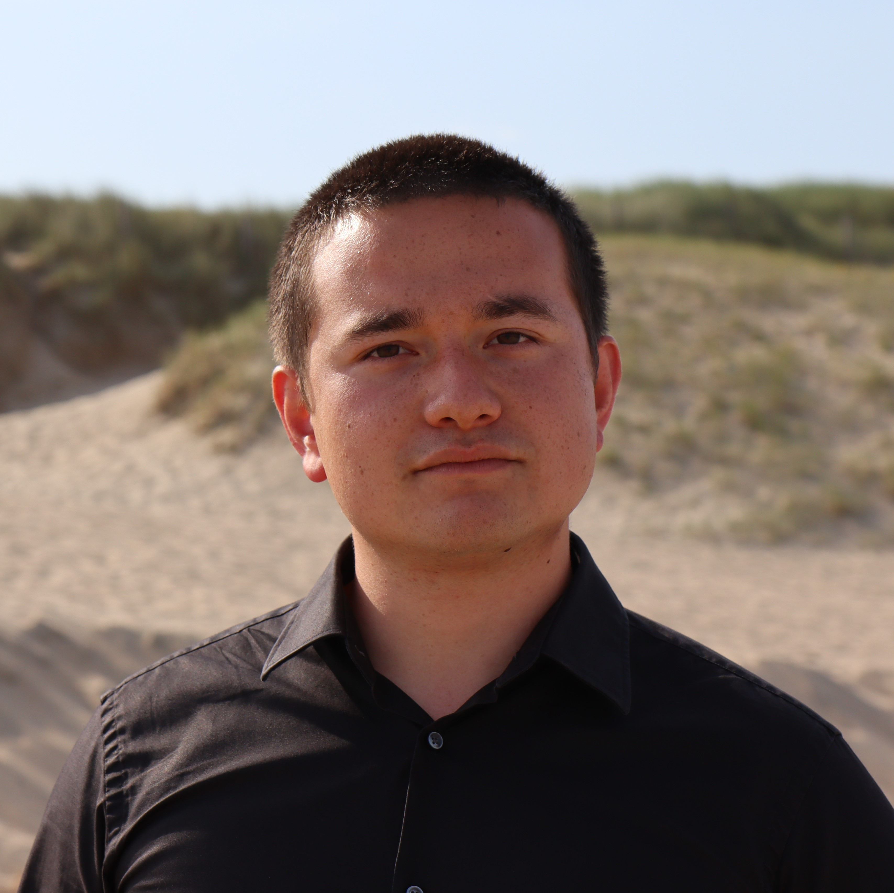

Duleen van Gunsteren
Altviool De Nederlandse altviolist Duleen van Gunsteren werd in 1995 geboren te Noordwijk. Als jongen studeerde hij viool aan de School voor Jong Talent in Den Haag bij Koosje van Haeringen. Daarna vervolgde hij zijn studie altviool aan het Conservatorium Rotterdam bij Ron Ephrat.
Zijn huidige opleiding volgt hij bij Marjolein Dispa-Knaven en Nobuko Imai aan het Conservatorium van Amsterdam, waar hij deze zomer eindexamen doet.
Hij volgde onder meer masterclasses bij Garth Knox, Ilona Sie Dhian Ho, Pierre Henri Xuereb, Atte Kilpeläinen, Lilli Maijala en Anita Mitterer.
Naast klassieke muziek maken op de altviool houdt Duleen van zigeunermuziek, improvisatie, zingen en componeren.
Zijn hobby's omvatten schaken, vechtsport en honden trainen.